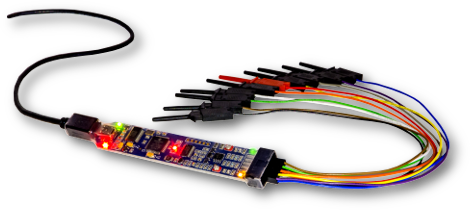

Bitscope - Cost Effective Tiny Oscilloscopes

A PC based oscilloscopes that us a Raspberry Pi? Check out Bitscope. The micro and mini models come with their own software and make you wonder why electronics labs still use oscilloscopes.


A PC based oscilloscopes that us a Raspberry Pi? Check out Bitscope. The micro and mini models come with their own software and make you wonder why electronics labs still use oscilloscopes.